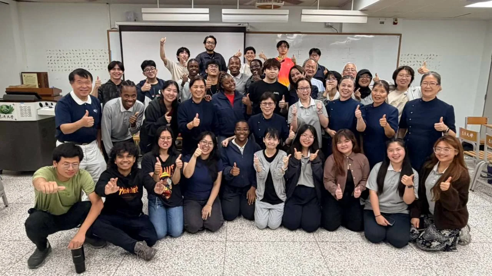

Business Management
at Tzu Chi University.

How we learn
Management, digital business, sustainability, teamwork, and professional ethics shape the department’s teaching.
See all original department materials
Management, digital business, sustainability, teamwork, and professional ethics shape the department’s teaching.
See all original department materials